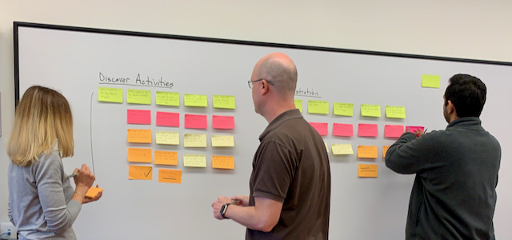
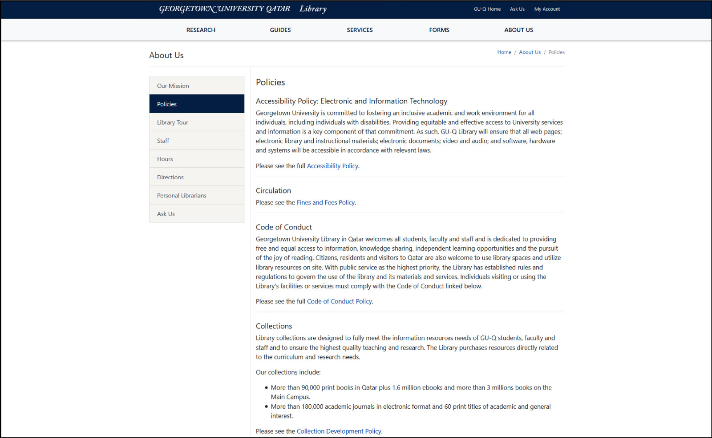

Library Website
Redevelopment Project
1. Project Details
1. Project Details
- Timeline: Spring 2019, Launch: July 8, 2019
- Core Project Team: 3 Library Staff members
-
Key Stakeholders:
- library administration
- faculty
- students
- local community
2. Challenges
2. Challenges
-
Balancing different stakeholder priorities between
- Communications department
- Library staff
- Library & University IT departments
- Managing all major communication and technical aspects of the project
3. Project Context
Library Website before Project in 2018
New Georgetown University Qatar Website 2019

4. Requirements & Scope
4. Requirements & Scope
- Align the library website to the main GU-Q website
-
Re-organize/re-evaluate site content based on:
- User feedback
- Analytics
- Refresh the visual content
- Implement improved accessibility standards
- Library website only (not libGuides, marketing materials, signage)
5. General Approach
5. General Approach
- Well-Rounded Project Team
-
Detailed Project Plan, which includes:
- Requirements, scope, and responsibilities
- Project stages
- Deadlines
- Supporting documentation during the project
- Team communication, check-ins, and stakeholder updates
6. Project Execution
6. Project Execution
- Information Collection
- User Research
- Information Architecture
- UX Design (Tools: Adobe XD, Photoshop, Illustrator)
- Development
- Testing
- Deployment
Project Execution Examples
Information Collection
User Research

UX Design
UX Design
Development
Directions
Building Access & Parking
The Georgetown University in Qatar Library...
The library welcomes all visitors...
Development - In Action

Deployment - Home Page

Deployment - Sub-Page
7. What lessons did you learn while completing the project?
7. What lessons did you learn while completing the project?
- Project goals, scope, & requirements must be clear
- Team members need to be active & engaged
- Roles and responsibilities - clear understanding
- Support from management to execute the project
- Flexibility - with time, people, and some deadlines
8. How do you feel about the outcome?
8. How do you feel about the outcome?
Positive Outcome 😁👍
- Project was completed on time
- Website was well-received by stakeholders & users